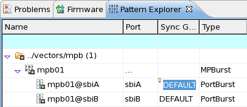

Creating a multiport burst
A multiport burst is the combination of one or more port bursts that are executed in parallel in a multiport test.
About this task
To create a multiport burst you use the New Multiport Burst dialog. You access the dialog from the Pattern Explorer.
Before you begin
You should have defined already several ports to assign or combine them to a multiport burst.
Note that you cannot assign two or more ports that share the same pins.
Procedure
Results
The resulting multiport burst (Type = MPBurst) appears in the Pattern Explorer.

Note The port burst files are not written to the specified folder, until
you explicitly save the created multiport burst.
What to do next
Functional changes
- Introduced in SmarTest 7.1.3